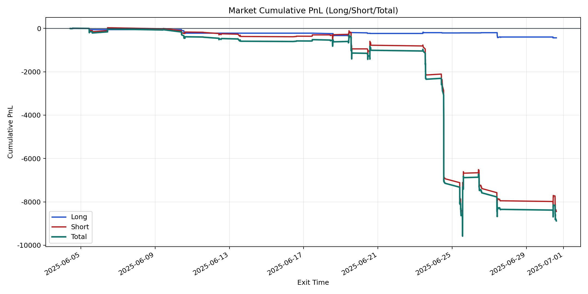
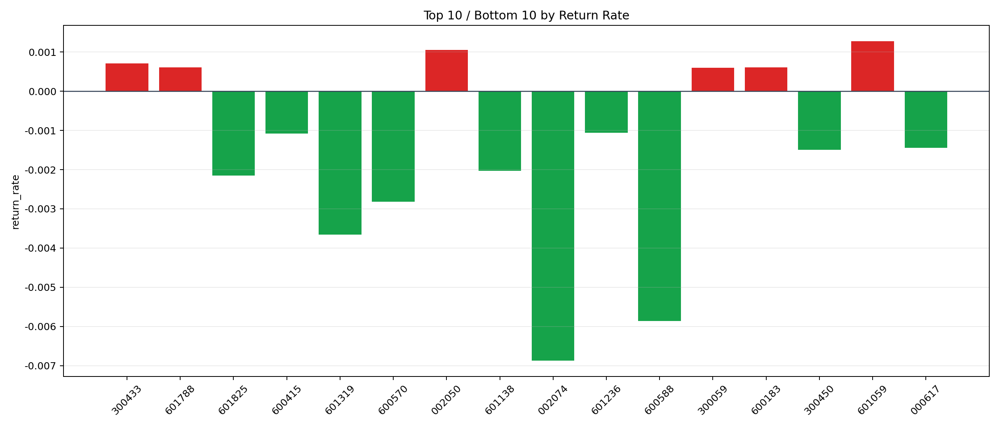

| repo_root | /home/haoranyou/data/output/alpha0.4_1w_5s_3ticks_index_filter/index_weights_300 |
|---|---|
| period_months | 1 |
| period_label | 2025-06-04_to_2025-06-30 |
| start_time | 2025-06-04 10:07:27 |
| end_time | 2025-06-30 14:44:02 |
| n_trades | 703 |
| n_symbols | 16 |
| total_pnl | -8877.439600000018 |
| long_total_pnl | -434.6000000000071 |
| short_total_pnl | -8442.83960000001 |
| total_entry_notional | 6486172.0 |
| long_entry_notional | 463302.0 |
| short_entry_notional | 6022870.0 |
| total_return_rate | -0.001368671629429503 |
| long_return_rate | -0.0009380490479212417 |
| short_return_rate | -0.0014017967513826482 |
| top_symbols_by_return | ["601059", "002050", "300433", "600183", "601788", "300059", "601236", "600415", "000617", "300450"] |
| bottom_symbols_by_return | ["002074", "600588", "601319", "600570", "601825", "601138", "300450", "000617", "600415", "601236"] |

